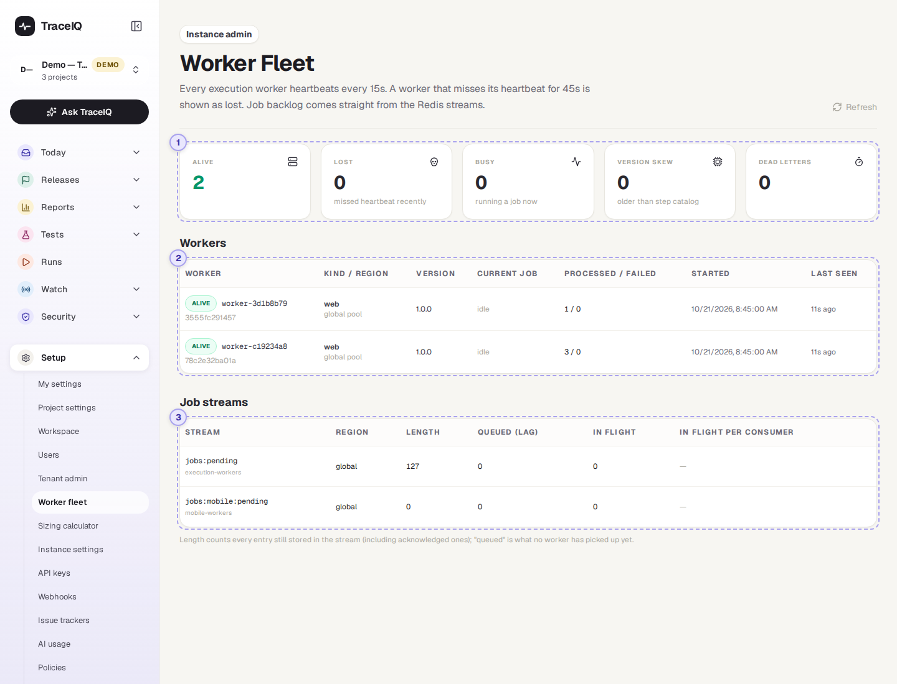
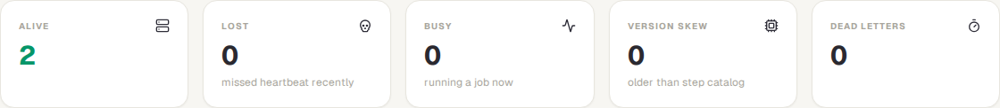
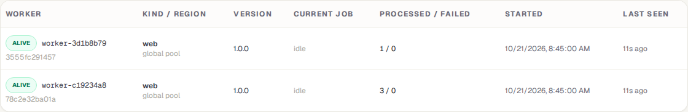
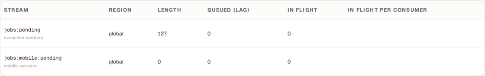

Worker fleet
Tests don't run inside the TraceIQ website itself: they run on separate machines called workers, each with its own browser. This page shows those workers, whether each one is alive, what it is doing, and how much work is waiting for them.
What it is for
Worker fleet answers "Can TraceIQ run tests right now, and if not, why not?" When runs stay Queued for a long time, the reason is usually here: no worker is alive, every worker is busy, or a worker is too old to run a new kind of step.
It is a page for the person who looks after the TraceIQ server (the instance admin). Everyone else sees "Instance admins only", because it names every machine and region in the installation.
Where to find it: in the sidebar, open Setup → Worker fleet. The sidebar shows it to organisation admins too, but only an instance admin can open it.
A tour of the screen
The page has three parts. The numbers on the screenshot match the sections below.

Above the tiles, the page reminds you how it decides that a worker is alive: every worker checks in every 15 seconds, and one that hasn't checked in for 45 seconds is shown as lost.
The five tiles

| Tile | What the number means |
|---|---|
| Alive | Workers that checked in within the last 45 seconds and can take tests. |
| Lost | Workers that stopped checking in: stopped, crashed or cut off. A lost worker stays on the page for 10 minutes after its last check-in, then disappears. |
| Busy | Alive workers that are running a test at this moment. |
| Version skew | Alive workers older than the TraceIQ server: they don't know some of the step types the server offers, so tests using those steps fail on them. The fix is to update the workers. |
| Dead letters | Jobs that failed to run several times in a row and were set aside, so they don't block the queue. They need someone to look at them. |
If something needs attention (a queue with no worker to serve it, workers too old, jobs set aside), a yellow box under the tiles says so in a sentence.
Workers

One row per worker. Alive workers come first.
| Column | What it shows |
|---|---|
| Worker | alive or lost, the worker's name, and under it the machine it runs on. |
| Kind / region | web (browser tests), mobile (phone app tests) or local (a developer's own computer, with the workspace it belongs to). The region is where it runs; global pool means it takes work from everyone. |
| Version | The worker's software version. A yellow "skew" label lists the step types it is missing; "step types not reported" means it is too old to say, so TraceIQ can't tell. |
| Current job | The run it is working on, as a link, or idle. |
| Processed / failed | How many jobs it has finished since it started, and how many of those did not pass. A test that failed counts as failed here too, so this is not a measure of the worker's health on its own. |
| Started, Last seen | When the worker started, and how long ago it last checked in. |
Job streams

A job stream is a queue of work. When you start a run, TraceIQ puts one job per test on a queue, and workers take jobs from it. Browser tests and phone tests have their own queues, and each region has its own.
| Column | What it shows |
|---|---|
| Length | Every job still stored in the queue, including finished ones. A large number here is normal. |
| Queued (lag) | Jobs no worker has picked up yet. This is the number that means waiting. Shown in bold when above zero. |
| In flight | Jobs a worker has taken but not finished yet. |
| In flight per consumer | Which worker holds those jobs, and how many each. |
Watch it in use
How to…
…find out why runs stay queued
- Look at Alive. If it is zero, no worker is running: start the workers on the server.
- If workers are alive, look at Busy. If every alive worker is busy, runs are waiting their turn; more workers would help.
- In Job streams, find the queue with a bold Queued number. If the yellow box says no live worker serves it (for example a region with no worker), start a worker for that region.
…check that an update reached every worker
- Look at Version skew. It should be zero.
- In the Version column, every worker should show the new version and no yellow "skew" label.
Good to know
- It updates by itself every 15 seconds. Refresh (top right) updates it straight away.
- Lost isn't always bad. A worker that was stopped on purpose, or replaced by a new one, shows as lost for 10 minutes and then leaves the list.
- Nothing can be changed here. Starting, stopping or adding workers happens on the server. Jobs in Dead letters can be retried or thrown away only through TraceIQ's API, by an instance admin; ask whoever runs your TraceIQ server.
- Local workers (on a developer's computer) appear here while they are running, labelled with their workspace.
Related pages
Sizing calculator
The next page in this guide: how many workers you need for the tests you run.
Instance settings
Server-wide settings, including the ones every worker picks up.
Runs
Every run, including the ones still queued.